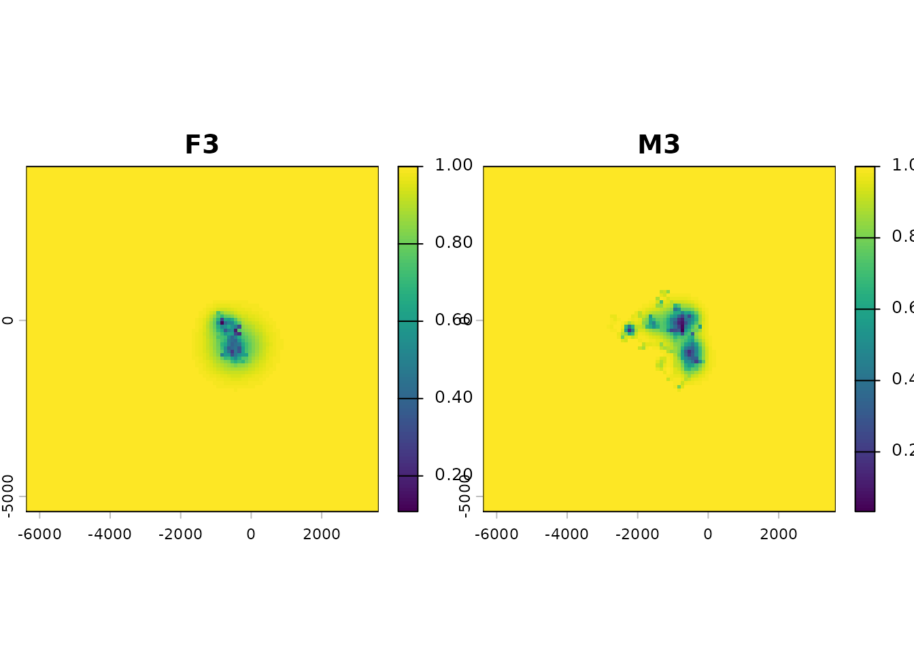
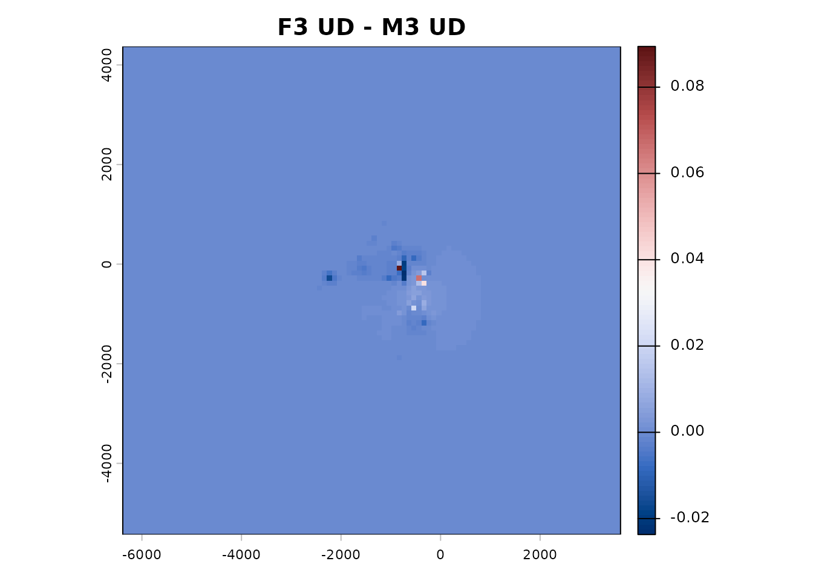

Once you have several UDs — for different individuals, different
seasons, or different behavioural contexts (see
vignette("UD_bursted_uds", package = "move2utils")) — the
next question is usually how similar they are. This vignette covers the
three comparison operations: stacking on a common grid, computing an
overlap metric, and computing Earth-mover’s distance (EMD).
Stacking on a common grid
Every pairwise UD metric depends on the two UDs having identical
extents and cell geometry. mt_dbbmm_ud() and
mt_dbgb_ud() enforce this automatically on multi-track
input. The only situation where you need to intervene manually is when
the UDs come from separate dispatches (e.g. two datasets loaded at
different times).
This is how you can get a stack with each layer renormalised to sum to 1:
## Given a list of UDs (or a multi-layer SpatRaster) on a common grid:
uds_list <- list(day = ud_day, night = ud_night) # or split
stk <- terra::rast(uds_list) # stack
stk <- stk / terra::global(stk, "sum", na.rm = TRUE)[, 1] # renormalise
names(stk) <- names(uds_list)The global(..., "sum") divisor is a per-layer scalar, so
the division broadcasts correctly and every output layer sums to 1 . If
you built the UDs with mt_dbbmm_ud() or
mt_dbgb_ud()’s multi-track dispatch, or with the
composite-track_id idiom from
vignette("UD_bursted_uds", package = "move2utils"), the
output is already on a common grid and already per-layer normalised —
you do not need the renormalisation step.
library(move2)
library(dplyr)
library(sf)
library(terra)
library(move2utils)
fishers <- mt_read(mt_example())
fishers <- fishers[!st_is_empty(fishers), ]
two <- filter_track_data(fishers, .track_id = c("F3", "M3"))
## keep each individual to its first 500 fixes for a fast build
two <- two |>
dplyr::group_by(mt_track_id(two)) |>
dplyr::slice_head(n = 500) |>
dplyr::ungroup()
## The UD functions accept any CRS, but here we deliberately project to a
## metric grid: the EMD default ground metric is Euclidean (and overlap
## metrics compare cells), which only makes sense on equal-area cells.
## On a lon/lat grid you would pass gc = TRUE to emd() instead (see below).
two_p <- st_transform(two, mt_aeqd_crs(two))
stk <- mt_dbbmm_ud(
two_p,
location_error = 25,
window_size = 31,
margin = 11,
raster = 100,
ext = 1.25
)
names(stk)
#> [1] "F3" "M3"stk and vud are both a two-layer
SpatRaster; the layers share grid and CRS.
Volume UD
Most comparison operations work more cleanly on cumulative-volume UDs
than on raw probability densities. The transform orders cells by
probability density and replaces each value by the cumulative sum — so
cell v = 0.5 means “this cell is inside the 50 %-volume
contour, together with all denser cells”. ud_volume()
applies the transform; it accepts a multi-layer SpatRaster
and acts layer-wise.

Overlap metrics
Core-area overlap (Jaccard)
The overlap of the two p-volume contours — shared area
divided by combined area (a symmetric Jaccard index) — is a common
“core-area overlap” summary. At p = 0.5 it compares the two
50 % cores.
in_core <- function(vud_a, vud_b, p = 0.5) {
mask_a <- vud_a <= p
mask_b <- vud_b <= p
sum(terra::values(mask_a & mask_b), na.rm = TRUE) /
sum(terra::values(mask_a | mask_b), na.rm = TRUE)
}
in_core(vstk[[1]], vstk[[2]], p = 0.50) # 50% core overlap
#> [1] 0.2461538
in_core(vstk[[1]], vstk[[2]], p = 0.95) # 95% use overlap
#> [1] 0.5148515Bhattacharyya affinity
A density-level overlap on the raw probability UDs; bounded in [0, 1], 1 meaning identical distributions.
bhatt <- function(p, q) {
p <- terra::values(p); q <- terra::values(q)
sum(sqrt(p * q), na.rm = TRUE)
}
bhatt(stk[[1]], stk[[2]])
#> [1] 0.7916157Because both UDs already sum to 1 on the same grid, the returned value is exactly the Bhattacharyya affinity used in the home-range literature (e.g. Fieberg & Kochanny 2005).
A visual: where the two UDs agree and disagree
diff_ud <- stk[[1]] - stk[[2]]
terra::plot(diff_ud,
main = "F3 UD - M3 UD",
col = hcl.colors(100, "Blue-Red 3"))
Positive cells belong more to F3; negative to M3. Neutral grey indicates the shared core.
Earth-mover’s distance (EMD)
EMD is the minimum-cost work to transport probability mass between
two UDs; it decreases smoothly as the two UDs drift into coincidence.
emd() computes pairwise EMDs over a stack of UDs and
returns a stats::dist object.
d <- emd(stk)
d
#> F3
#> M3 528.0358By default emd() uses Sinkhorn entropic
regularisation (Cuturi 2013). On a small fisher stack the
default call completes in well under a minute. A
mask_quantile = 0.999 pre-mask (via
ud_volume()) drops cells outside the 99.9 % volume contour
— typically > 95 % of cells on well-supported UDs — before transport,
and is the single biggest practical speed-up.
For validation you can switch to the exact LP solver (requires the
emdist package):
d_exact <- emd(stk, method = "exact")
## relative difference between Sinkhorn and exact, typically sub-1%
max(abs(as.vector(d) - as.vector(d_exact)) / as.vector(d_exact))Unprojected (lon/lat) UDs and a hard distance cutoff
emd() defaults to Euclidean distance between cell
centroids, which is the right ground metric on projected UDs. If your
UDs are on a longitude/latitude grid (e.g. straight from
terra::rast() without mt_aeqd_crs()), pass
gc = TRUE to use Haversine great-circle distances instead —
emd() warns when input is on a longlat CRS and
gc = FALSE. The threshold argument (in map
units when gc = FALSE, metres when gc = TRUE)
clips the cost matrix at a maximum transport distance, reproducing the
EMD-hat variant exposed by move::emd(). Both
gc and threshold are currently honoured by
method = "sinkhorn" only; method = "exact" is
restricted to Euclidean, unclipped costs through
emdist::emd().
Tuning reg and mask_quantile
| What for | reg |
mask_quantile |
Expected behaviour |
|---|---|---|---|
| Default (balanced) | 0.05 | 0.999 | Fast; within 0.1 % of exact |
| Fastest (interactive) | 0.1 | 0.95 | Very fast; within 1 % |
| Highest fidelity | 0.01 | 0.9999 | Slow; near-exact |
| Exact | — | 0.999 | Use method = "exact"
|
On irregularly supported or multi-modal UDs, consider raising
mask_quantile slightly so that secondary modes are not
truncated.
Pairwise comparison across a UD stack
Any metric that takes two UDs generalises to a distance matrix on a
stack. For a small number of UDs, a nested sapply is
fine:
ud_list <- lapply(seq_len(terra::nlyr(stk)), function(i) stk[[i]])
nm <- names(stk)
mat <- outer(seq_along(ud_list), seq_along(ud_list),
Vectorize(function(i, j) bhatt(ud_list[[i]], ud_list[[j]])))
dimnames(mat) <- list(nm, nm)
matFor larger stacks the emdist EMD is the bottleneck (it
is super-linear in the number of non-zero cells), so downsample the grid
or mask to a tight contour first.
Further reading
-
vignette("UD_dbbmm_ud", package = "move2utils")— the Dynamic Brownian bridge UDs (dBBMM). -
vignette("UD_dbgb_ud", package = "move2utils")— the Directional UDs with the dynamic bivariate Gaussian bridge (dBGB). -
vignette("UD_bursted_uds", package = "move2utils")— producing dBBMM and dBGB UDs per behavioural or temporal segment per individual. -
vignette("UD_gap_aware_ud", package = "move2utils")— excluding long-gap segments from dBBMM/dBGB - Fieberg, J., & Kochanny, C. O. (2005). Quantifying home-range overlap: the importance of the utilization distribution. Journal of Wildlife Management, 69(4), 1346–1359.